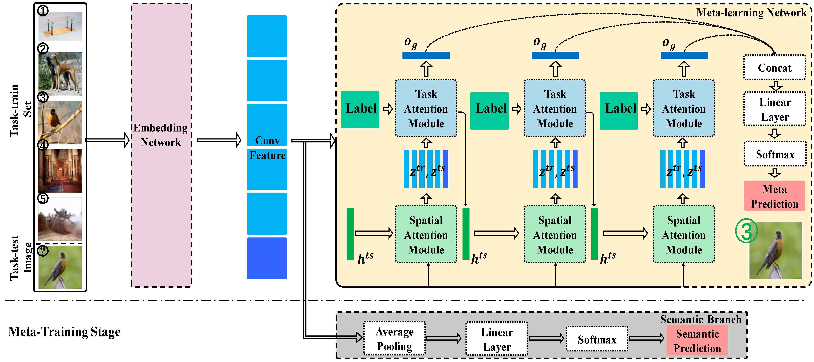
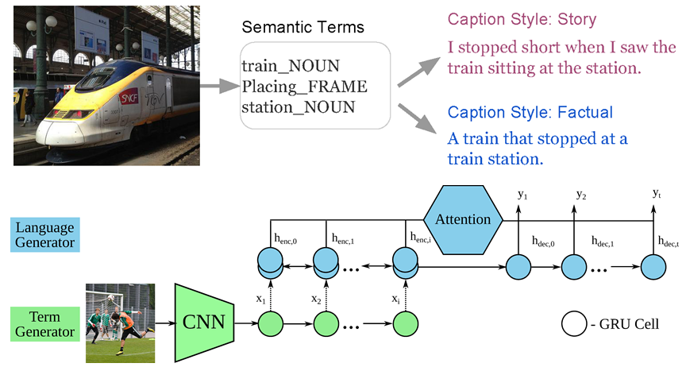
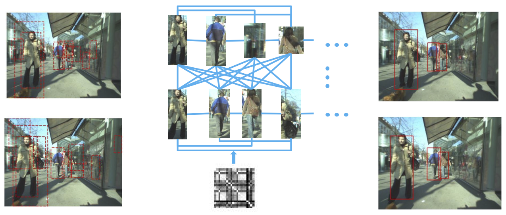
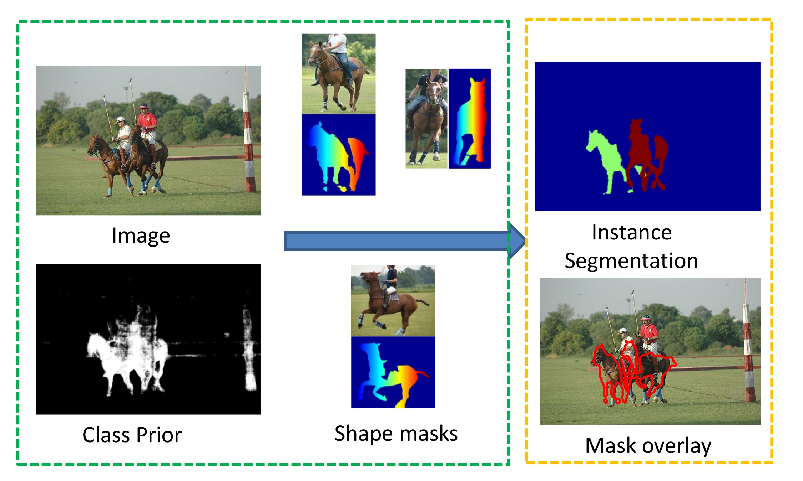
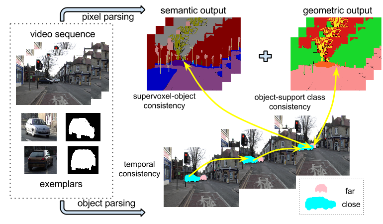

|
Research Projects
Please see our PLUS Lab website for more details.
Few-shot Learning
|
 |
Despite recent success of deep neural networks, it remains challenging to efficiently learn new visual concepts from limited training data. To address this problem, a prevailing strategy is to build a meta-learner that learns prior knowledge on learning from a small set of annotated data.
We propose a novel meta-learning method for few-shot classification based on two simple attention mechanisms: one is a spatial attention to localize relevant object regions and the other is a task attention to select similar training data for label prediction. We implement our method via a dual-attention network and design a semantic-aware meta-learning loss to train the meta-learner network in an end-to-end manner.
|
A Dual Attention Network with Semantic Embedding for Few-shot Learning, [pdf]
Shipeng Yan, Songyang Zhang, Xuming He
AAAI Conference on Artificial Intelligence (AAAI),2019
One-shot Action Localization by Learning Sequence Matching Network, [pdf]
Hongtao Yang, Xuming He, Fatih Porikli
IEEE Conference on Computer Vision and Pattern Recognition (CVPR), 2018
Connecting Vision and Language
|
 |
Linguistic style is an essential part of written communication, which can affect
both clarity and attractiveness. With recent advances in vision and language,
we can start to tackle the problem of generating image captions that are both visually grounded and appropriately styled.
We develop a model that learns to generate visually relevant styled captions from a large corpus of styled text without aligned images.
One key component is a novel and concise semantic term representation
generated using natural language processing techniques and frame semantics.
|
SemStyle: Learning to Generate Stylised Image Captions using Unaligned Text, [pdf]
Alexander Mathews, Lexing Xie, Xuming He
IEEE Conference on Computer Vision and Pattern Recognition (CVPR), 2018
SentiCap: Generating Image Descriptions with Sentiments, [pdf] [arXiv]
Alexander Mathews, Lexing Xie, Xuming He
AAAI Conference on Artificial Intelligence (AAAI-16), 2016
Object Detection in Context
|
 |
Exploring contextual relations is one of the key factors to improve object detection under challenging viewing condition and to scale up recognition to large numbers of object classes. We consider two effective approaches that incorporate contextual information: object codetection, which jointly detects object instances in a set of related images, and structural Hough voting, which models the context from 2.5D perspective for object localization under heavy occlusion.
|
Efficient Scene Layout Aware Object Detection for Traffic Surveillance, [pdf]
Tao Wang, Xuming He, Songzhi Su, Yin Guan
IEEE Conference on Computer Vision and Pattern Recognition Workshops (CVPRW), 2017.
Traffic Surveillance Workshop and Challenge Best Paper Award.
Learning to Co-Generate Object Proposals with a Deep Structured Network, [pdf]
Zeeshan Hayder, Xuming He, Mathieu Salzmann
IEEE Conference on Computer Vision and Pattern Recognition (CVPR), 2016
Object and Scene Parsing
|
 |
We address the problem of joint detection and segmentation
of multiple object instances in an image, a key step towards
scene understanding. Inspired by data-driven methods,
we propose an exemplar-based approach to the task
of instance segmentation, in which a set of reference image/shape
masks is used to find multiple objects. We design
a novel CRF framework that jointly models object appearance,
shape deformation, and object occlusion.
|
Deep Free-Form Deformation Network for Object-Mask Registration, [pdf]
Haoyang Zhang, Xuming He
International Conference on Computer Vision (ICCV), 2017
Learning Dynamic Hierarchical Models for Anytime Scene Labeling, [pdf] [arXiv]
Buyu Liu, Xuming He
European Conference on Computer Vision (ECCV), 2016
Holistic Video Understanding
|
 |
We address the problem of integrating object reasoning
with supervoxel labeling in multiclass semantic video
segmentation. To this end, we first propose an object-augmented
CRF in spatio-temporal domain, which
captures long-range dependency between supervoxels, and
imposes consistency between object and supervoxel labels.
We develop an efficient inference algorithm to
jointly infer the supervoxel labels, object activations and
their occlusion relations for a large number of object
hypotheses.
|
3D Object Structure Recovery via Semi-supervised Learning on Videos, [pdf]
Qian He, Desen Zhou, Xuming He
British Machine Vision Conference (BMVC),2018
Multiclass Semantic Video Segmentation with Object-Level Active Inference, [pdf] [suppl zip]
Buyu Liu, Xuming He
IEEE Conference on Computer Vision and Pattern Recognition (CVPR), 2015
More details on previous projects can be found here.
|
{kind=link}
{kind=link}
{kind=link}
{kind=link}